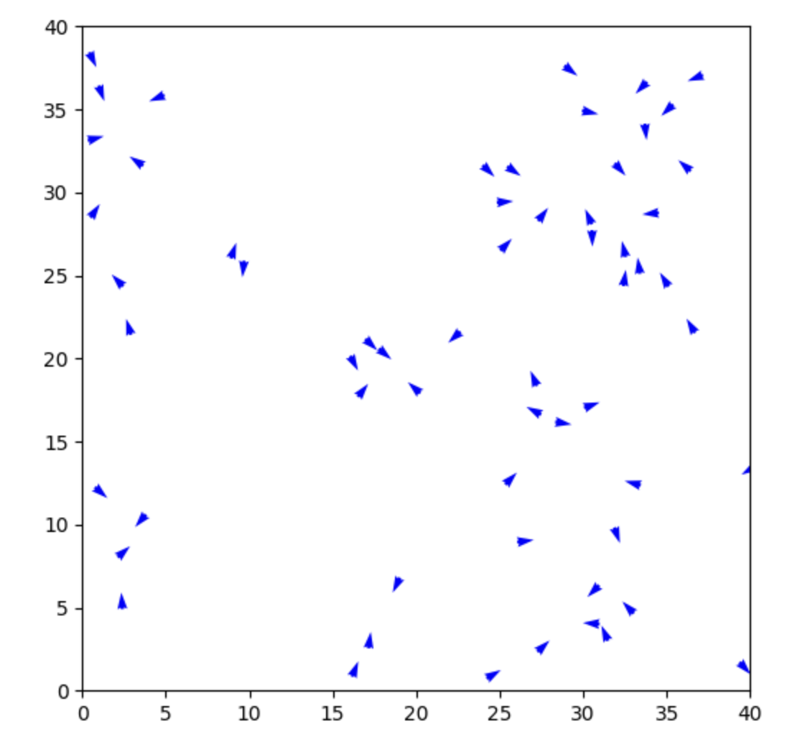

CMSE 202 Project - Bird Flocking Simulation
Conclusion Based on our simulations, we can conclude that network theory can explain flocking behaviors. By treating each bird as part of a local network and letting them respond only to neighbors, we were able to recreate realistic flocking patterns. Different parameter choices led to different species-like behaviors, from big flocks to small ones to constantly changing ones. This supports the idea that flocking doesn’t require a leader or complicated communication. Instead it can come from simple local rules spreading through a connected network of birds. However, the network graphs can be more visually cluttered, and don't necessarily improve upon tracking their positions and animating them.
